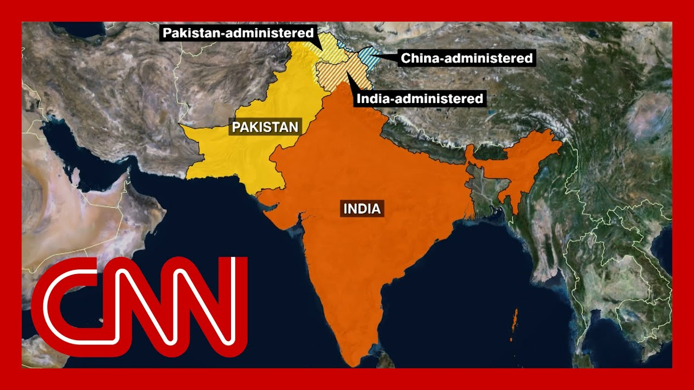

来B站一起耍【Global每日英语简报】
【印度总理莫迪首次就印军袭击巴基斯坦及巴控克什米尔所谓“恐怖目标”发声，呼吁“保持警惕并加强协调”。双方在克什米尔实际边界交火持续，巴方宣称击落20余架印度无人机。巴基斯坦誓言报复此次袭击，印度则称行动是为回应上月印控克什米尔针对游客的致命屠杀（印度指控巴方所为，巴方否认）。记者尼科·罗伯逊从伊斯兰堡发回报道，指出冲突呈现升级态势——印度首次承认打击巴军事设施，无人机袭击波及巴南部、中部及北部，造成平民与军人伤亡。局势引发区域战争担忧，专家分析双方需找到“保全颜面”的退出机制，但核武背景与克什米尔根本矛盾使危机存在失控风险。】
Summary: India's prime minister speaking out for the first time since Indian forces attacked what they called terrorist targets in Pakistan and in Pakistan controlled Kashmir under Modi, calling for continued alertness and strong coordination.
摘要： 印度总理莫迪首次就印军袭击巴基斯坦及巴控克什米尔所谓“恐怖目标”发声，呼吁“保持警惕并加强协调”。

⏱️ Estimated Reading Time: 3 min
His comments come as more shelling is reported by both sides across Kashmir de facto border, and Pakistan is claiming it has shot down more than two dozen drones that were launched from India.
双方在克什米尔实际边界持续交火，巴基斯坦宣称击落20余架印度发射的无人机。
As we reported in detail yesterday, Pakistan is vowing to retaliate to these strikes.
如昨日详报，巴基斯坦誓言报复此次袭击。
India says the strikes were carried out in response to the deadly massacre of more than two dozen tourists last month in the Indian controlled part of Kashmir, which it blames on Pakistan.
印度称行动是为回应上月印控克什米尔针对游客的致命屠杀（印度指控巴方所为）。
Pakistan denies any involvement.
巴基斯坦否认参与。
Nic Robertson has been on top of this story for us all week.
尼科·罗伯逊本周持续追踪事件。
He is in the Pakistani capital of Islamabad for you today.
他今日从巴基斯坦首都伊斯兰堡发回报道。
It's good to have you.
感谢连线。
Loitering munitions.
游荡弹药。
These drones that come and loiter over a target and then zero in on the target and explode.
这类无人机盘旋锁定目标后自爆。
That's what Pakistan Army officials are saying India is sending over.
巴军方称印度正投放此类武器。
India has said that it sent these drones to target air defense systems.
印度承认派遣无人机打击防空系统。
The picture that emerges is now a rolling, continuing conflict.
当前局势呈现持续升级的冲突态势。
Pakistan information minister says the Pakistani side have killed 40 to 50 Indian soldiers across that line.
巴新闻部长称巴方已击毙40至50名印军士兵。
One drone landed in Pindi, about ten miles from here.
一架无人机坠毁于距此地十英里的品第。
A lot of destruction around the main cricket stadium there.
当地主要板球场周边遭严重破坏。
It's really rattling people here in Pakistan.
此事令巴基斯坦民众深感不安。
Pakistan still hasn't done what it said it would do and have those revenge attacks.
巴基斯坦尚未实施其宣称的报复行动。
India confirmed it targeted air defense systems in several locations throughout Pakistan.
印度承认打击了巴境内多处防空设施。
The announcement marks the first time India has taken ownership for targeting Pakistani military installations.
这是印度首次承认针对巴军事设施的行动。
Fears of a wider regional conflict continue to grow.
对区域战争扩大的担忧持续加剧。
Pakistan certainly reserves the right to respond and has indicated that they will respond.
巴基斯坦保留反击权利并已表明将采取行动。
The Pakistan military is not as large and as professional as the Indian military.
巴军规模与专业程度不及印军。
China also has a dog in this fight because they share that border.
巴方反击目标可能为双方心照不宣的地点。
Both sides will probably say we've maintained our honor and we can walk away from this.
中国亦涉足此争端，因其与该争议地区接壤。
Each side has to be able to say we won something.
双方或宣称“保全颜面”后收手。
Both nations are nuclear armed.
各方需向民众展示“取得胜利”。
If Pakistan responds and then India responds, we're now into a cycle of action, reaction counter action.
两国均为拥核国家。
Every spasm tends to be worse than the one before.
若报复循环启动，局势恐难刹车。
The underlying problem doesn't go away.
每次冲突烈度往往超过前次。